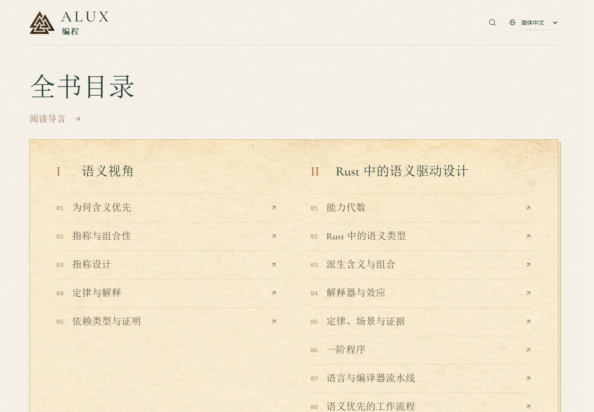
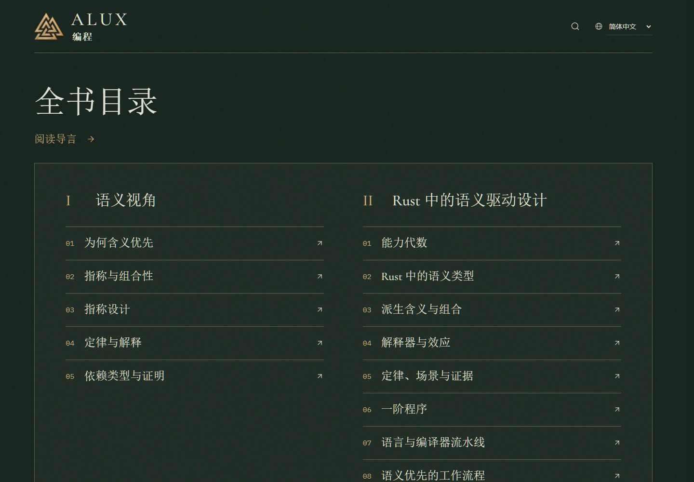
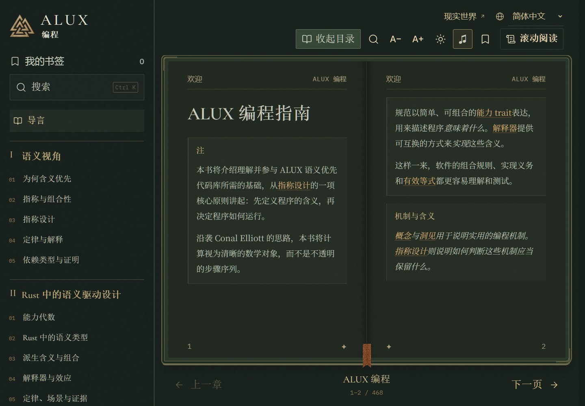
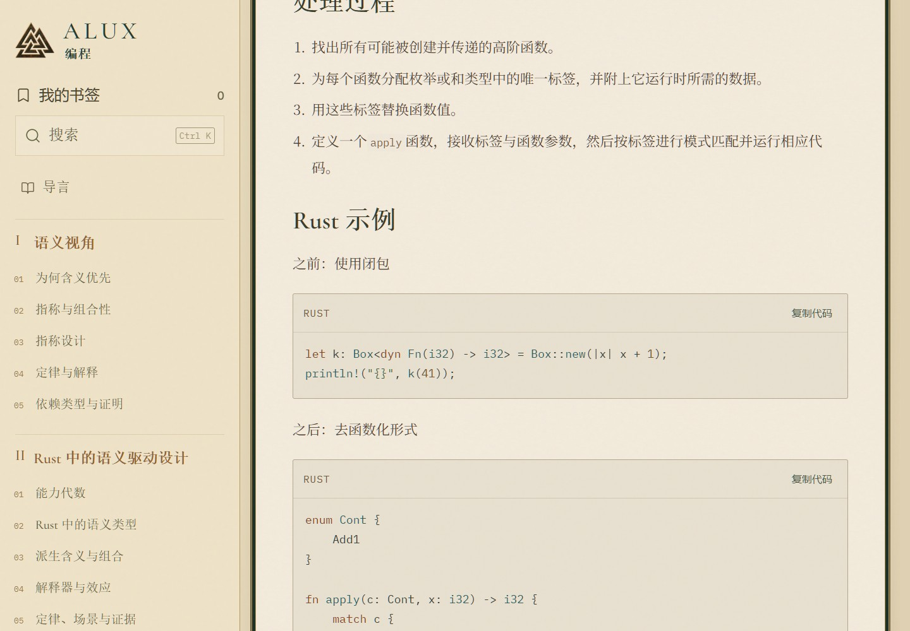
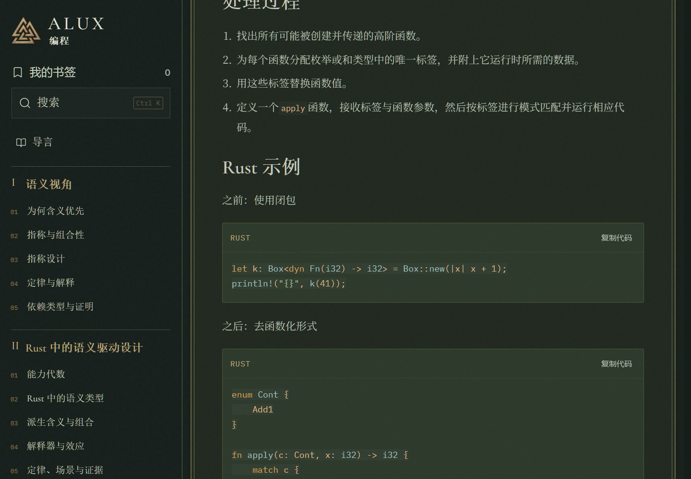
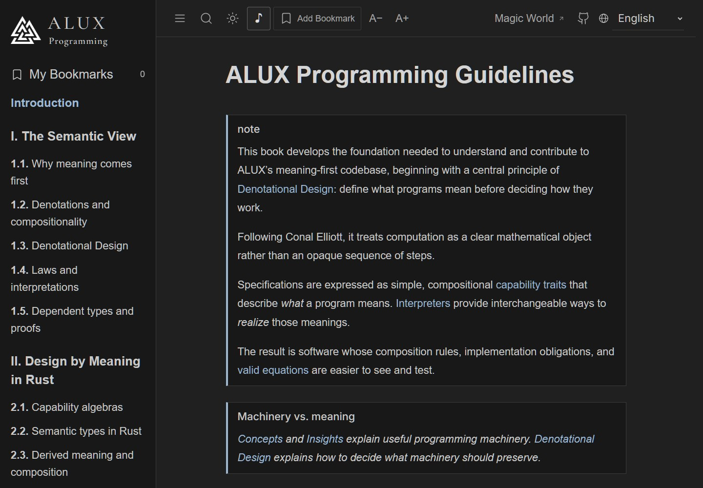

ALUX 编程预览ALUX Programming reader preview
从程序的含义出发，阅读指称设计、组合性与 Rust。
Program meaning, denotational design, composition and Rust.
全书目录Full contents
章节直接进入正文，沿用当前语言与昼夜设置。
Open a chapter directly, keeping the selected language and theme.


翻页阅读Book view
全书连续页码；字号、语言与窗口改变后重新分页。
Continuous page numbers, recalculated for text size, language and window.


滚动阅读Continuous reading
正文、代码、提示框和插图沿用翻页阅读的尺度。
Text, code, callouts and illustrations share the book-view scale.


现实世界Real World


分享卡片Share cards

先定义程序的含义，再选择执行方式。通过 Rust 示例理解指称设计、组合性、定律与解释器。
进入中文网站 ↗
Define what programs mean before choosing how they run. Denotational design, composition, laws and interpreters, with Rust examples.
Explore the English website ↗欢迎来到阿拉克斯Welcome to ALUX
森林入口The forest gateway

查看手机效果 / View the mobile layout

截图展示对应的昼夜与阅读模式，直达链接沿用浏览器中已保存的设置。
Screenshots show the labeled modes; reader links keep your saved preferences.
分享卡片的实际显示和平台缓存需在上线后核对。
Live social previews and platform caches can be checked after deployment.